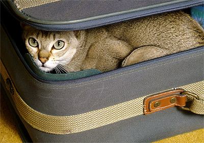

First make sure you’ve allowed enough time in your schedule. A Furry Faces photo session takes two to three hours hours.It would be rude to take a picture of someone without being properly introduced, so I take a while to establish a trusting relationship with your pet while he/she is allowed to investigate my equipment. I never begin until I get, what my husband calls, the “sniff-biff” of approval.
Since I work almost exclusively at your location, I’ll need to be shown some of your pet’s favorite places and listen to your concerns or ideas for backgrounds. Part of why I’m able to make your animals look comfortable is because they are on a familiar chair or backyard spot. I'll be prepared when we shoot indoors, but I much prefer using natural light. Animals don’t appreciate flashed lights any more than humans so I never use them.
Then we start taking pictures. Unlike some photographers, I require that the owner or someone who knows the pet well be present throughout the session. You’ll probably want to give up before I do and you may find your pet quite exhausted at the end of the session but the results will be worth the effort. By the way, the strange barks, meows, chirps, and whistles are probably just me trying to get your pet’s attention.
Finally, sit back, pet your furry friend, and wait for the results. I usually have finished photos in about a week.

